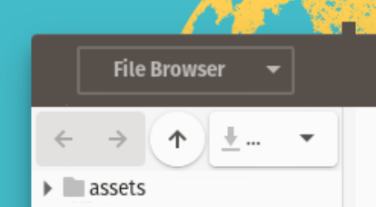
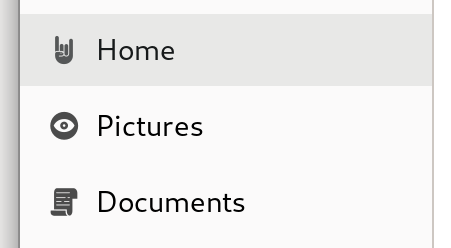
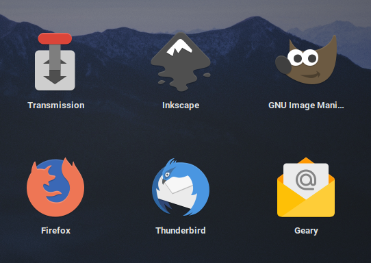

We are developers and designers making apps for the GNOME platform. We take pride in our craft and work hard to make sure our applications are a great experience for people.
Unfortunately, all our efforts designing, developing, and testing our apps are made futile by theming in many cases.

GTK Stylesheets can make applications look broken, and even unusable.

Icon Themes can change icon metaphors, leading to interfaces with icons that don’t express what the developer intended.

App Icons are the identity of an app. Changing an app’s icon denies the developer the possibility to control their brand.
There are also less direct, second-order consequences, including:
Appstream Screenshots (the screenshots used in GNOME Software or Flathub) are not very useful if they look nothing like the real app does once you install it.
User Help and Documentation are similarly useless if UI elements on your system are different from the ones described in the documentation.
These blog posts explain some of the issues with theming in more detail:
GTK Stylesheets — Restyling apps at scale
App Icons — Linux Themes & Third-Party Icons
This is why we ask respectfully that our applications not be themed. They are built and tested for the upstream GNOME stylesheet, icons, and fonts, so that’s what they should look like on peoples’ systems.
Though we could disable theming directly in our apps, we do not want to resort to this. We believe that a technical solution would likely not be effective, because this is not a technical problem.
The problem we’re facing is the expectation that apps can be arbitrarily restyled without manual work, which is and has always been an illusion. Until this perception changes, there is little hope of improving the situation. We’re trying to do our part in raising awareness with this letter.
If you like to tinker with your own system, that’s fine with us. However, if you change things like stylesheets and icons, you should be aware that you’re in unsupported territory. Any issues you encounter should be reported to the theme developer, not the app developer.
On a platform level, we believe GTK should stop forcing a single stylesheet on all apps by default. Instead of apps having to opt out of this by hardcoding a stylesheet, they should use the platform stylesheet unless they opt in to something else. We realize this is a complicated issue, but assuming every app works with every stylesheet is a bad default.
If you are a distribution who changes the system stylesheet and icons, please reconsider this decision. Changing third-party apps without any QA is reckless, and would be unacceptable on any other platform. Your actions are hurting us app developers a great deal, and are damaging to the entire ecosystem beyond your distribution.
We understand the need for distributions to stand out. However, we urge you to find ways to do this without taking away our agency. We are tired of having to do extra work for setups we never intended to support, just to have that used against us when people tell us the breakage from theming is “not that bad”. You are not doing this to Blender, Atom, Telegram, or other third party apps. Just because our apps use GTK that does not mean we’re ok with them being changed from under us.
Since you are shipping the GNOME platform, we assume you want this ecosystem to be healthy. If you do, we ask that you please stop theming our apps.
Signed,
- Alain
Maintainer of Planify
- Alice Mikhaylenko
Maintainer of Highscore
- Avi Wadhwa
Maintainer of Organizer
- Bilal Elmoussaoui
Maintainer of Authenticator, Icon Library, Contrast and Obfuscate
- Brage Fuglseth
Maintainer of Keypunch and Fretboard
- Cédric Bellegarde
Maintainer of Lollypop and Geary
- Christopher Davis
Core contributor to Fractal
- Daniel García Moreno
Maintainer of Fractal and Timetrack
- Evangelos "GeopJr" Paterakis
Maintainer of Tuba, Collision, Archives and Calligraphy
- Falk Alexander Seidl
Maintainer of Secrets
- Felix Häcker
Maintainer of Shortwave, Fragments, and Remotely
- Forever XML
Maintainer of Random
- Gianni Rosato
Maintainer of Aviator
- Jan Lukas Gernert
Author of FeedReader and Newsflash
- Jordan Petridis
Maintainer of Podcasts
- Julian Sparber
Core contributor to Fractal, maintainer of Teleport
- Lains
Maintainer of Khronos
- Manuel Genovés
Maintainer of UberWriter
- Maximiliano Sandoval
Maintainer of Decoder, Lorem, Secrets, and Citations
- Michael Gratton
Maintainer of Geary
- nokyan
Maintainer of Resources
- Rafael Mardojai C.M.
Maintainer of Blanket, Dialect, Share Preview and Webfont Kit Generator
- Sophie Herold
Maintainer of Pika Backup
- Tobias Bernard
Designer of Fragments and Podcasts (among others)
- Vladimir Vaskov
Maintainer of Cassette
- Vojtěch Perník
Maintainer of Blurble
- Zander Brown
Maintainer of App Icon Preview
- The Bottles Developers
- The Gradience Developers
- The Graphs Developers
- The Pitivi Developers
Note: Even though some of us are Foundation members or work on GNOME, these are our personal views as individuals, and not those of the GNOME Project, the GNOME Foundation, or our employers.